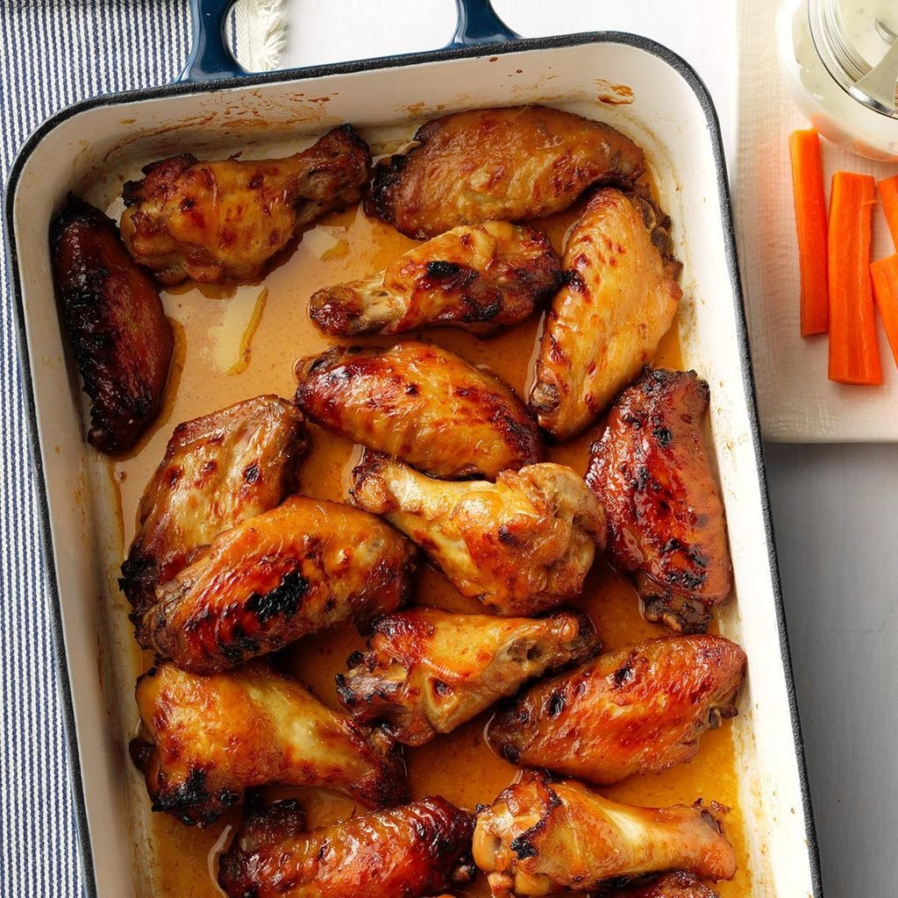

Stickywings

stickywings
Sticky wings are wings coated in a sweet savoury marinate
sticky wings dont take alot of time and are very delicious to snack but also can be dished up with fries
Ingredients
- chicken wings cut at joint
- Chicken spices
- BBQ marinate sauce
- brown sugar
- water
- tomato sauce
Preaheat your oven to 180 degrees
- Make sure your chicken wings are cut at the joint
- Marinate your wings with your spices and leave for a few minutes
- Add your BQQ suace and tomate sauce to yout spice marinated wings and mix together
- Leave your wings for a few minutes to be fully coated before putting them on the oven
- Leave them to fry in the oven for about 30 minutes
- Take them out and pour the remaining marinate onto them leave them for about 20 minutes begore taking them out
- Enjoy your stickywings